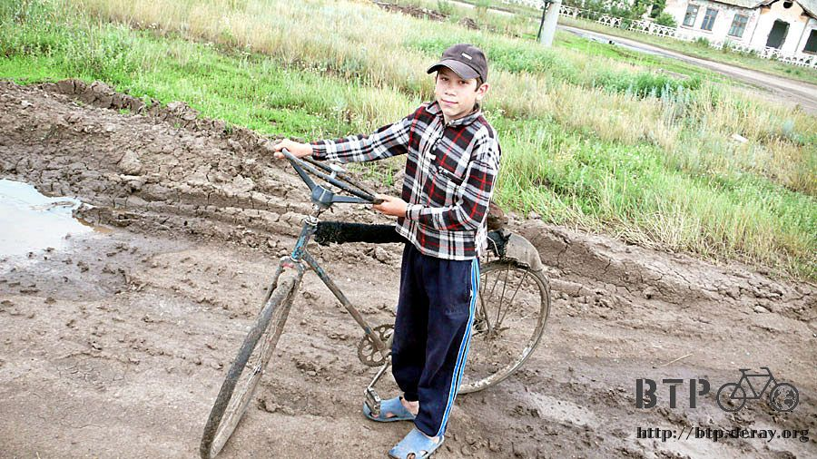
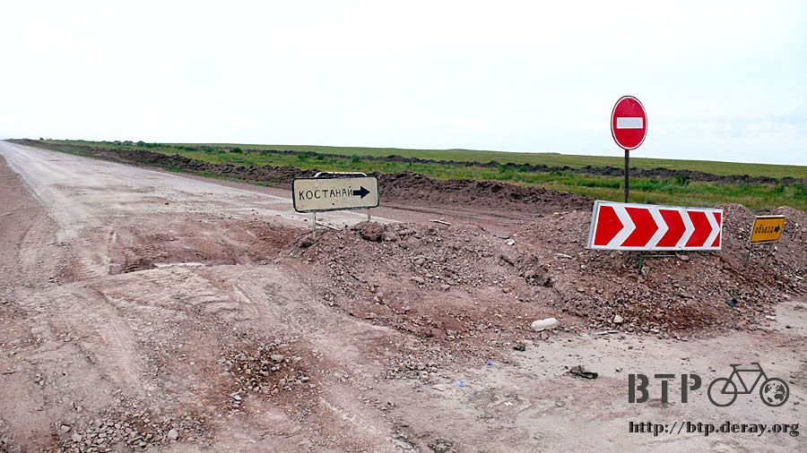
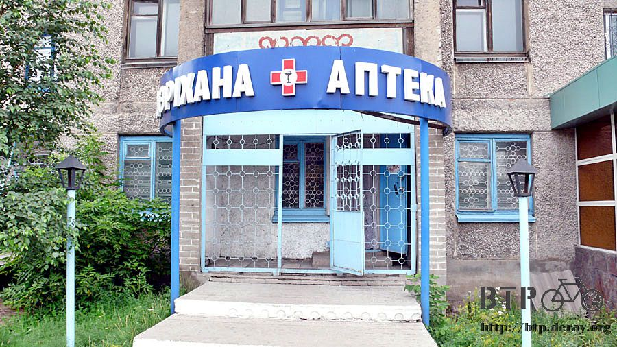
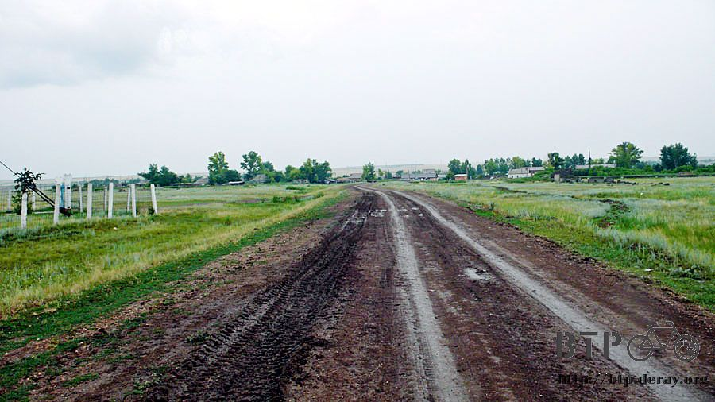
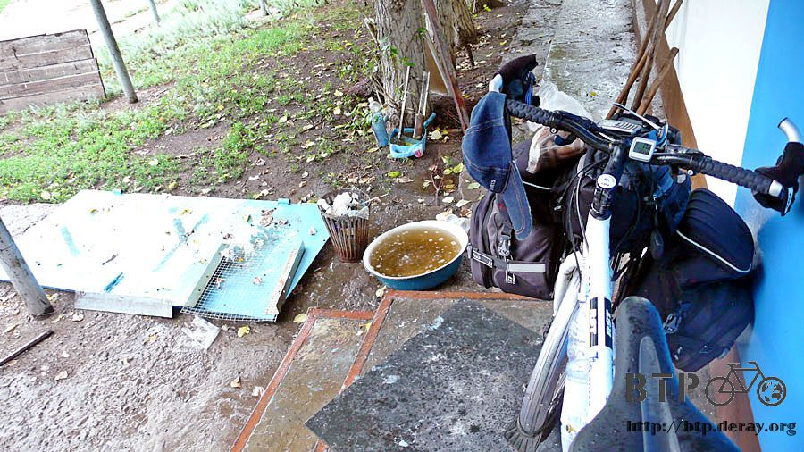
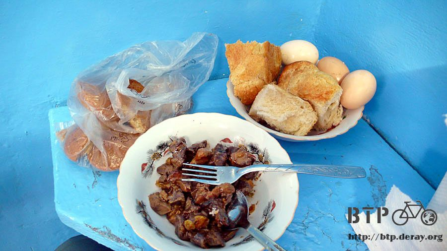
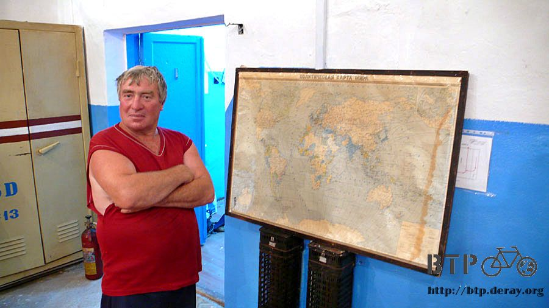
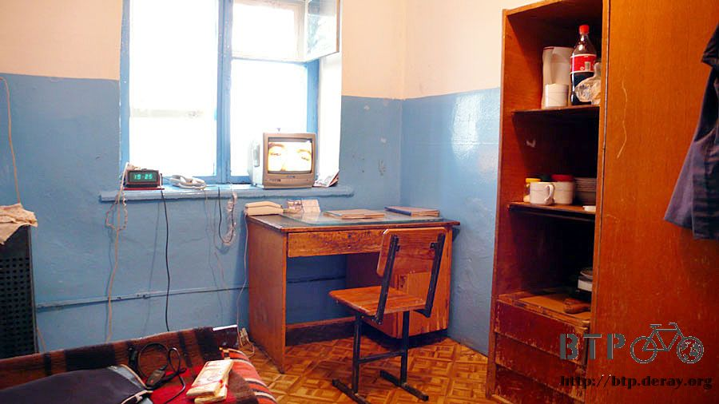
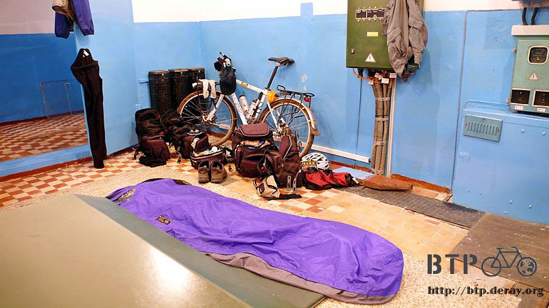

Soaking Wet
It has been cloudy or raining these days.
Sometime it was drizzling, and sometime I got soaking wet in the rain.
Back to back rainy days depressed me.
When I woke up this morning, the sky was terribly overcast.
If my raincoat was still with me, I would put it on before the rain started,
because a heavy rainstorm could burst out the next second.
Without knowing where my raincoat was, I had better ride out of the cloudy area as far and fast as I could.

Before I set out, Rustan came on a bike to see me off.
He escorted me riding to the fork road outside the town and said good bye to me
The rain started since then and never stopped the entire day.

Here the road was under construction with a detour sign.
When I rode here yesterday, I got frustrated enough to stop. However I still had to start from here today.
I did not want to get on the temporary road, following the tire tracks in the dirt, and riding on the road still under construction.

The condition of the road under construction was much better than the temporary road.
However it did not last long, the road under construction was then too bad to ride on.
I had to go back to the temporary road and suffer.
The milestone, lying down by the side of the road due to the road construction, made me sigh.

After 12 km I rode into a larger city with the shops I needed.
My first stop was a grocery store for stocking up on snacks and water since I had run out of food.
Everything in the shop was labeled with pink price tags.
At the cashier, the total was shown on the cash register, no communication problem, and certainly no way to bargain.
I got a bottle of water and a big bag of chocolate cookies for 100 KZT which could supply me for the whole day.

The signboards along the street were all low key and in letters, which made me see them but not understand them.
Spotting a signboard with a red cross on it, my instinct told me that it was a pharmacy.
If it was a pharmacy, I would look for eye drops.
Long time biking in wind and dust made my eyes sore and tired, so eye drops were consumed quickly.
Taking a closer look of the sign, it was not only a red cross, there was a snake coiling around a wine glass in the middle of it.
Very strange icon, couldn’t it be a bar?

It was indeed a pharmacy when I went in to check it out, but no eye drops for sale, sigh!
I found a place for lunch, two sunny-side up eggs, two sausages, a cup of milk tea and bread.
That was a perfect meal.
After filling up my stomach, stocking up on snacks and plenty of water, off I went in high spirits!

Right after I got out of the restaurant, the rain dampened my spirits again. It seemed heavier.
Outside the city, the main road was dug out terribly again.
I thought the road would lead me straight to the border,
but now I had to ask the vehicles passing by to ensure that I was on the right road.

After a three hours of dumb riding I was getting wetter in the rain.
The air was very humid, so the wind could not dry my clothes. On the contrary, it made my clothes damp and cold.
Soon I was soaking wet.
The reason why I was still on the road was there was no shelter in sight along the road under construction.
I found no place for a break, but continued on in the rain. Finally a village was in view,
I immediately pulled into the town seeking shelter from the rain.

The dirt road leading to the village became slippery and muddy after the rain. I was about to fall.
It was too dangerous to ride. I walked Dido to the village.
There was a tall radar tower which could be seen from outside of the village and a few cement buildings,
all the others were wooden houses.

I planed to take shelter in the cement building, walking Dido over and opened up the blue iron gate.
The cement building was not small, but it did not have eaves or any place that I could hide from rain.
There was only an overhang above the entrance door, the width of Dido. I hurried Dido and myself to the entrance.

Even though I was not exposed to the rain directly outside the building,
however, it was still really cold since the wind kept on blowing and throwing the rain at me.
Knocking on the iron double door, nobody responded, I thought the rain overpowered my knock.
After knocking harder, still nobody answered the door.

I had been hiding here since 4:00pm, wishing somebody would come to work,
open the door and let me in to shelter from the rain.
Better yet, taking me in for one night – please don’t throw me out.
I thought I would get drier when sheltering from rain, but it had no effect on the result.
Even if I was in dry clothes, the moist air would also dampen my clothes while standing here.
Squatting down by Dido in this tiny place, I looked down and saw a spider had started making its web on Dido’s wheel spoke.
The web scene really reflected the dreary atmosphere quite well.
There could be another spider out of my sight making a web on my body.
Who knows when the rain was going to stop?
After two hours of waiting, finally a man walked toward me in rain coat and rain boots.
Seeing me dispirited, squatting in front of the door, there was no need for me to explain what I was doing here.
Before saying anything, I was taken into the building sheltering me from the rain.
This man, Victor, was the building manager for this radar tower.

The first question Victor asked was “are you hungry?”
Bingo, I was suffering from hunger and cold.
Victor called his friend named Victor as well living in the village to bring over some food.
10 minutes later, a man in rain boots with an umbrella brought me something simple,
cold goat-innards stew, bread and raw eggs.
Except for the raw eggs that I did not know how to eat, I finished up the bread and stew without being picky about the food.

The cold food did not fuel me up, I felt like hot food. According to the current situation, it wouldn’t be easy to get hot food.
Victor took out a large world map (Kazak version) pointing Hainandao, and asked “Is Taiwan here”
That was an exact question for me. Correcting Victor where Taiwan was on the map,
I used the map to show both Victors my bike route.

After filling up, I asked Victor if there were shops in the village.
Luckily, even though the small village had no restaurants, it still had a shop.
I followed the Victor who brought me food to the shop.
Walking on muddy road in my blue-white rubber sandals, I grew taller and taller because of the build-up of mud on the sole.
Later on I felt like I was walking on stilts and had to wash the mud off in a puddle.
I pitied myself before seeing three chickens walking in the rain like me and burst out laughing.
They literally looked like three drowned chickens.
[Note: “to look like a drowned rat” in Chinese is “to look like a drowned chicken”]
I bought apple juice, soda pop, raisin cake and white chocolate in the shop,
and walked back to the radar tower myself in the rain to show Victor my booty.
We opened up the juice, eating the cake accompanied by the juice.
This place was not luxurious, but it could shelter me from the cold wind and the wet weather – I desired no more.

If I had fuel on hand, I would have ignited the camping gas stove and boiled some water to make hot brown sugar water.
After we were full, Victor told me to spend the night here and not to ride in such weather.
I was thinking to take a break, and when the rain stopped or started to slacken a bit, I would hit the road.
However, after being invited to stay overnight, I opened up all my damp bags for ventilation.
Without doing so, they would be messed up.

I camped inside the factory building by night, hoping it would be a nice and clear day the next day when I woke up,
and would never ever complain again about fierce sun or hot weather – I really meant it.